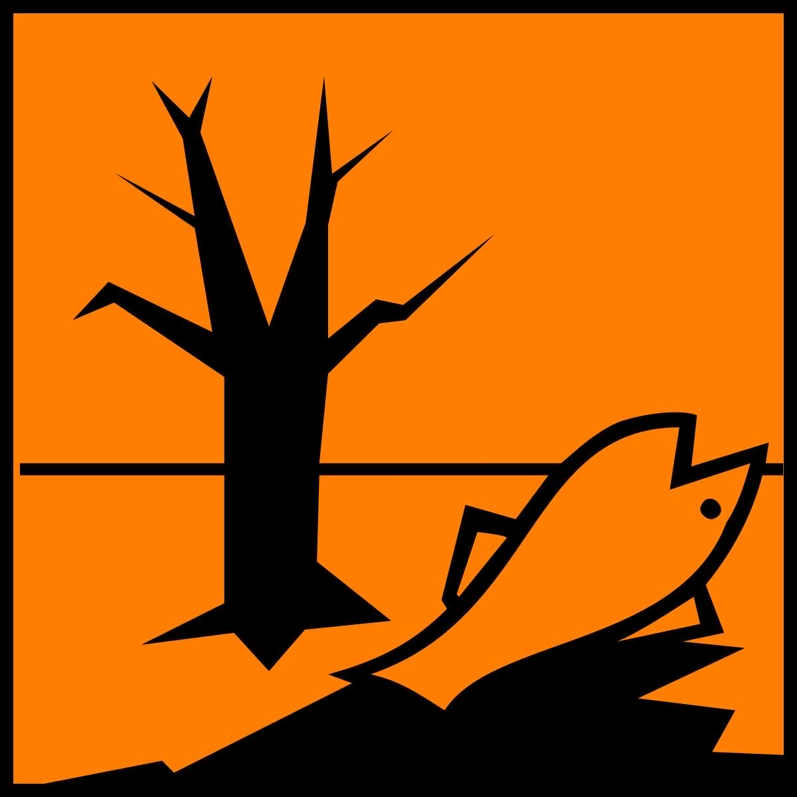

Miljøgift
Miljøgifter er skadelige stoffer som kan forurense luft, vann og jord, og som har negative effekter på både miljøet og menneskers helse. Disse stoffene kan være naturlig forekommende eller menneskeskapte, og de inkluderer en rekke kjemikalier som tungmetaller (som bly og kvikksølv), pesticider, industrielle kjemikalier og plastforbindelser. Miljøgifter kan akkumuleres i næringskjeden, noe som betyr at de kan bli mer konsentrert i organismer høyere opp i kjeden, inkludert mennesker. Eksponering for miljøgifter kan føre til alvorlige helseproblemer, som kreft, hormonforstyrrelser og nevrologiske skader. Bekjempelse av miljøgifter er derfor viktig for å beskytte både økosystemer og folkehelsen.
Tungmetaller
Tungmetaller er en gruppe metaller med høy tetthet, som bly, kadmium, kvikksølv, arsen og aluminium. Disse metallene kan akkumuleres i kroppen over tid, og når nivåene blir for høye, kan de forårsake alvorlige helseproblemer. Forgiftning kan oppstå, noe som fører til nevrologiske problemer, organskader, immunsvekkelse og kognitive vansker. Langvarig eksponering for tungmetaller er også knyttet til økt risiko for kreft. Det er derfor viktig å være oppmerksom på kilder til tungmetallforurensning og ta tiltak for å redusere eksponeringen, spesielt for gravide og barn.Utslipp og hvordan vi får det i oss
Miljøgifter kommer ut i naturen på mange måter. Fabrikker kan slippe ut giftige stoffer i luften eller vannet. Bønder bruker sprøytemidler på åkrene sine, og disse kan renne ut i elver og sjøer. Søppel som ikke kastes riktig kan lekke farlige stoffer. Biler og fly slipper ut forurensning i luften. Når disse giftene er i naturen, kan dyr og planter få dem i seg. Fisk kan svømme i forurenset vann og ta opp gifter gjennom huden eller gjellene. Planter kan suge opp gifter fra jorda gjennom røttene. Dyr kan spise planter eller andre dyr som har gifter i seg. Mennesker kan få i seg miljøgifter ved å puste inn forurenset luft, drikke forurenset vann, eller spise mat som inneholder gifter. På denne måten sprer miljøgiftene seg i naturen og ender opp i kroppene til levende vesener.Hvordan bekjempe
For å redusere mengden miljøgifter i kroppen og unngå ytterligere eksponering, kan man følge noen enkle tiltak. Først og fremst bør man følge nasjonale kostholdsråd og variere kosten, da mat er en hovedkilde til mange miljøgifter. Det er viktig å unngå slanking under amming, siden miljøgifter kan frigjøres fra fettvev. Man bør også være bevisst på valg av hverdagsprodukter og redusere bruken av produkter som inneholder kjente miljøgifter. Å følge offisielle råd om inntak av visse matvarer, spesielt for gravide og ammende, er viktig. Regelmessig fysisk aktivitet kan bidra til å redusere kroppens fettlagre hvor miljøgifter ofte lagres. Ved å være oppmerksom på disse faktorene kan man bidra til å redusere eksponeringen for miljøgifter i dagliglivet.Hormonsystemet
Hormonsystemet er kroppens system for å sende beskjeder ved hjelp av kjemiske stoffer som kalles hormoner. Disse hormonene lages i kjertler, som for eksempel skjoldbruskkjertelen og bukspyttkjertelen, og slippes ut i blodet. Hormonsystemets hovedoppgave er å hjelpe kroppen med å holde seg i balanse. Det styrer viktige funksjoner som vekst, stoffskifte, reproduksjon, blodsukkernivå og væskebalanse. Systemet jobber også med å tilpasse seg endringer i kroppen og omgivelsene, slik at alt fungerer som det skal.Nervesystemet
Nervesystemet er kroppens system for kommunikasjon og kontroll. Det består av hjernen, ryggmargen og nerver som går ut til hele kroppen. Nervesystemet har flere viktige oppgaver: det hjelper oss med å føle ting rundt oss, styre bevegelsene våre, og utføre handlinger uten at vi tenker på det, som å puste. Det gjør også at vi kan tenke og føle. Nervesystemet er delt inn i to deler: sentralnervesystemet, som inkluderer hjernen og ryggmargen, og det perifere nervesystemet, som er nervene som kobler hjernen til resten av kroppen. Gjennom nerver sender nervesystemet raske signaler slik at kroppen kan reagere på det som skjer rundt oss.Immunforsvaret
Immunforsvaret er det som beskytter kroppen mot sykdommer, altså det er det som beskytter kroppen vår mot sykdommer og fremmede stoffer. Kroppen vår har to immunforsvar: det ytre og det indre.
Det ytre immunforsvaret, også kalt det medfødte eller uspesifikke, er huden og slimhinnene som fungerer som en barriere mot smittestoffer. Det indre immunforsvaret, også kalt ervervet eller spesifikt, består av spesialiserte celler, organer og proteiner som oppdager skadelige stoffer i kroppen og uskadeliggjør dem. Det indre immunforsvaret aktiveres når smittestoffer kommer seg forbi det ytre forsvaret.
Når bakterier eller mikroorganismer kommer inn i kroppen, starter immunforsvaret en betennelsesreaksjon. Dette bidrar til å hindre at de skadelige stoffene får negative effekter på kroppen.